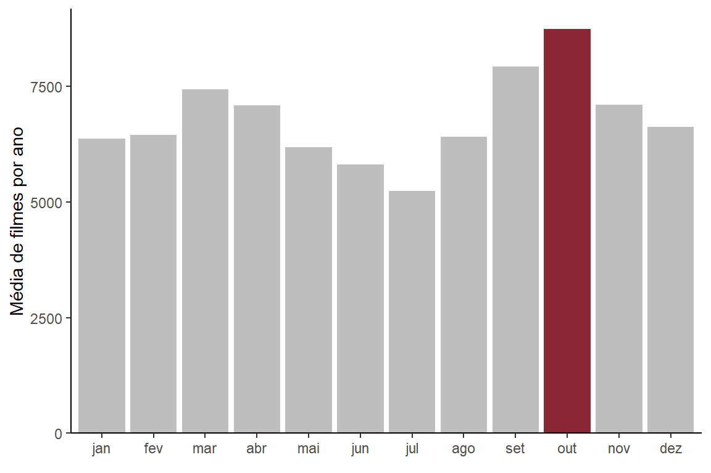

imdb <- basesCursoR::pegar_base("imdb_completa")
imdb_pessoas <- basesCursoR::pegar_base("imdb_pessoas")
# imdb_avaliacoes <- basesCursoR::pegar_base("imdb_avaliacoes")Contexto
Esse relatório se trata do Trabalho de Conclusão do curso de R para Ciência de Dados II, da Curso-R (turma 03/2023).
Para responder às perguntas propostas, foram utilizadas as bases de filmes do IMDB, acessadas com o código a seguir.
Perguntas
1. Qual o mês do ano com o maior número de filmes? E o dia do ano?
library(tidyverse)
imdb_2 <- imdb |>
filter(str_detect(imdb$data_lancamento, "[0-9]{4}-[0-9]{2}-[0-9]{2}")) |>
mutate(data_lancamento = ymd(data_lancamento)) |>
mutate(mes_abr = month(data_lancamento, label = TRUE, locale = "pt_BR"),
mes_comp = month(data_lancamento, label = TRUE, locale = "pt_BR", abbr = F),
dia = day(data_lancamento))
maior_mes <- imdb_2 |>
group_by(ano) |>
count(mes_comp) |>
group_by(mes_comp) |>
summarise(media = mean(n, na.rm = T)) |>
filter(media == max(media)) |>
pull(mes_comp)
maior_dia <- imdb_2 |>
group_by(ano) |>
count(dia) |>
group_by(dia) |>
summarise(media = mean(n, na.rm = T)) |>
filter(media == max(media)) |>
pull(dia)Considerando os anos de 1894 a 2020, o mês do ano com o maior número de filmes, em média, foi outubro. Já o dia com o maior número de filmes, em média, foi 1, como destacado nos gráficos abaixo.


2. Qual o top 5 países com mais filmes na base?
Na tabela abaixo, estão os 5 países com mais filmes.
imdb |>
separate_longer_delim(pais, delim = ",") |>
count(pais) |>
slice_max(order_by = n, n = 5) |>
mutate(pais = fct_recode(as_factor(pais),
"EUA" = "USA",
"Índia" = "India",
"Reino Unido" = "UK",
"França" = "France",
"Itália" = "Italy")) |>
rename(`País` = pais,
`Nº de filmes` = n) |>
knitr::kable()| País | Nº de filmes |
|---|---|
| EUA | 30910 |
| Índia | 6189 |
| Reino Unido | 5889 |
| França | 5202 |
| Itália | 3785 |
3. Liste todas as moedas que aparecem nas colunas `orcamento` e `receita` da base `imdb_completa`.
Na tabela abaixo, estão listadas todas as moedas.
identifica_moedas <- function(col) {
imdb |>
filter(!is.na({{ col }})) |>
distinct({{ col }}) |>
pull({{ col }}) |>
str_remove_all(" [0-9]+") |>
unique()
}
c(identifica_moedas(orcamento), identifica_moedas(receita)) |>
unique() |>
as_tibble() |>
rename(Moeda = value) |>
DT::datatable()4. Considerando apenas orçamentos e receitas em dólar ($), qual o gênero com maior lucro? E com maior nota média?
imdb_genero <- imdb |>
filter(str_detect(orcamento, "\\$") & str_detect(receita, "\\$")) |>
mutate(orcamento_num = str_remove(orcamento, "\\$ ") |> as.double(),
receita_num = str_remove(receita, "\\$ ") |> as.double(),
lucro = receita_num - orcamento_num) |>
separate_longer_delim(genero, delim = ",") |>
mutate(genero = str_squish(genero)) |>
mutate(genero = fct_recode(as_factor(genero),
"Ação" = "Action",
"Aventura" = "Adventure",
"Animação" = "Animation",
"Biografia" = "Biography",
"Comédia" = "Comedy",
"Família" = "Family",
"Fantasia" = "Fantasy",
"Suspense" = "Thriller",
"Musical" = "Music",
"Faroeste" = "Western",
"Guerra" = "War",
"Histórico" = "History",
"Documentário" = "Documentary"
)) |>
group_by(genero) |>
summarise(lucro_total = sum(lucro, na.rm = T),
nota_media = mean(nota_imdb, na.rm = T),
n = n())
maior_lucro <- imdb_genero |>
filter(lucro_total == max(lucro_total)) |>
pull(genero)
maior_nota <- imdb_genero |>
filter(nota_media == max(nota_media)) |>
pull(genero)Considerando os filmes lançados entre NA a NA, o gênero com maior lucro total foi “Aventura” e aquele com maior nota média foi “Film-Noir”. Os gráficos abaixo apresentam o lucro e a nota para os top dez gêneros.

5. Dentre os filmes na base `imdb_completa`, escolha o seu favorito. Então faça os itens a seguir:
- Quem dirigiu o filme? Faça uma ficha dessa pessoa: idade (hoje em dia ou data de falecimento), onde nasceu, quantos filmes já dirigiu, qual o lucro médio dos filmes que dirigiu (considerando apenas valores em dólar) e outras informações que achar interessante (base `imdb_pessoas`).
diretor <- imdb |>
filter(titulo == "Hunger Games") |>
pull(direcao)
idade <- imdb_pessoas |>
filter(nome == diretor) |>
mutate(data_nascimento = ymd(data_nascimento),
idade = Sys.Date() - data_nascimento) |>
mutate(idade = round(as.period(idade) / years(1))) |>
pull(idade)
local <- imdb_pessoas |>
filter(nome == diretor) |>
pull(local_nascimento)
conjuge <- imdb_pessoas |>
filter(nome == diretor) |>
pull(nome_conjuges) |>
str_extract("[A-Z][a-z]+ [A-Z][a-z]+")
filmes <- imdb |>
filter(str_detect(direcao, diretor))
lucro_medio <- filmes |>
filter(str_detect(orcamento, "\\$") & str_detect(receita, "\\$")) |>
mutate(orcamento_num = str_remove(orcamento, "\\$ ") |> as.double(),
receita_num = str_remove(receita, "\\$ ") |> as.double(),
lucro = receita_num - orcamento_num) |>
summarise(lucro_medio = mean(lucro, na.rm = T)) |>
pull(lucro_medio) |>
scales::number(big.mark = ".")- Filme: Jogos Vorazes (Hunger Games, em inglês)
- Dirigido por Gary Ross
- Idade: 67 anos
- Onde nasceu: Los Angeles, California, USA
- Cônjuge: Allison Thomas (divorciado em 2016)
- Quantos filmes dirigiu: 5
- Lucro médio dos filmes dirigidos: US$ 174.058.258
Abaixo estão os filmes dirigidos por Gary Ross.
| Filme | Ano de lançamento | Gênero | Orçamento | Receita | Nota (IMDB) |
|---|---|---|---|---|---|
| Pleasantville | 1998 | Comedy, Drama, Fantasy | $ 60000000 | $ 49805462 | 7.5 |
| Seabiscuit - Un mito senza tempo | 2003 | Drama, History, Sport | $ 87000000 | $ 148336445 | 7.3 |
| Free State of Jones | 2016 | Action, Biography, Drama | $ 50000000 | $ 25035950 | 6.9 |
| Hunger Games | 2012 | Action, Adventure, Sci-Fi | $ 78000000 | $ 694394724 | 7.2 |
| Ocean’s 8 | 2018 | Action, Comedy, Crime | $ 70000000 | $ 297718711 | 6.2 |
Qual a posição desse filme no ranking de notas do IMDB? E no ranking de lucro (considerando apenas valores em dólar)?
Em que dia esse filme foi lançado? E dia da semana? Algum outro filme foi lançado no mesmo dia? Quantos anos você tinha nesse dia?
Faça um gráfico representando a distribuição da nota atribuída a esse filme por idade (base `imdb_avaliacoes`).